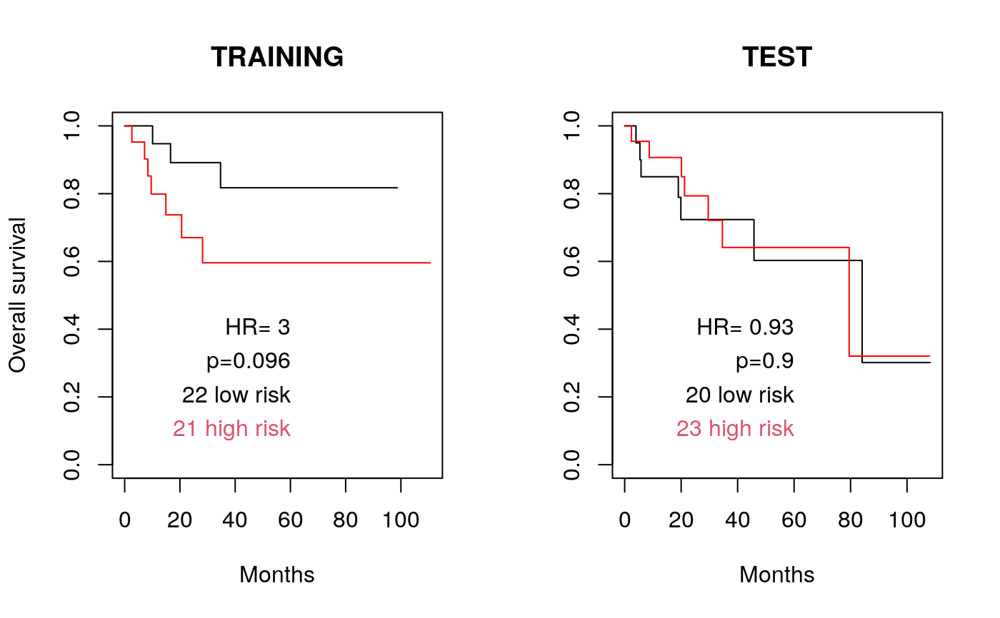

<!-- Generated by pkgdown: do not edit by hand -->
<!DOCTYPE html>
<html lang="en">
  <head>
  <meta charset="utf-8">
<meta http-equiv="X-UA-Compatible" content="IE=edge">
<meta name="viewport" content="width=device-width, initial-scale=1.0">

<title>Parallelized, two-dimensional tuning of Elastic Net L1/L2 penalties — opt2D • pensim</title>


<!-- jquery -->
<script src="https://cdnjs.cloudflare.com/ajax/libs/jquery/3.4.1/jquery.min.js" integrity="sha256-CSXorXvZcTkaix6Yvo6HppcZGetbYMGWSFlBw8HfCJo=" crossorigin="anonymous"></script>
<!-- Bootstrap -->

<link rel="stylesheet" href="https://cdnjs.cloudflare.com/ajax/libs/twitter-bootstrap/3.4.1/css/bootstrap.min.css" integrity="sha256-bZLfwXAP04zRMK2BjiO8iu9pf4FbLqX6zitd+tIvLhE=" crossorigin="anonymous" />

<script src="https://cdnjs.cloudflare.com/ajax/libs/twitter-bootstrap/3.4.1/js/bootstrap.min.js" integrity="sha256-nuL8/2cJ5NDSSwnKD8VqreErSWHtnEP9E7AySL+1ev4=" crossorigin="anonymous"></script>

<!-- bootstrap-toc -->
<link rel="stylesheet" href="../bootstrap-toc.css">
<script src="../bootstrap-toc.js"></script>

<!-- Font Awesome icons -->
<link rel="stylesheet" href="https://cdnjs.cloudflare.com/ajax/libs/font-awesome/5.12.1/css/all.min.css" integrity="sha256-mmgLkCYLUQbXn0B1SRqzHar6dCnv9oZFPEC1g1cwlkk=" crossorigin="anonymous" />
<link rel="stylesheet" href="https://cdnjs.cloudflare.com/ajax/libs/font-awesome/5.12.1/css/v4-shims.min.css" integrity="sha256-wZjR52fzng1pJHwx4aV2AO3yyTOXrcDW7jBpJtTwVxw=" crossorigin="anonymous" />

<!-- clipboard.js -->
<script src="https://cdnjs.cloudflare.com/ajax/libs/clipboard.js/2.0.6/clipboard.min.js" integrity="sha256-inc5kl9MA1hkeYUt+EC3BhlIgyp/2jDIyBLS6k3UxPI=" crossorigin="anonymous"></script>

<!-- headroom.js -->
<script src="https://cdnjs.cloudflare.com/ajax/libs/headroom/0.11.0/headroom.min.js" integrity="sha256-AsUX4SJE1+yuDu5+mAVzJbuYNPHj/WroHuZ8Ir/CkE0=" crossorigin="anonymous"></script>
<script src="https://cdnjs.cloudflare.com/ajax/libs/headroom/0.11.0/jQuery.headroom.min.js" integrity="sha256-ZX/yNShbjqsohH1k95liqY9Gd8uOiE1S4vZc+9KQ1K4=" crossorigin="anonymous"></script>

<!-- pkgdown -->
<link href="../pkgdown.css" rel="stylesheet">
<script src="../pkgdown.js"></script>


<meta property="og:title" content="Parallelized, two-dimensional tuning of Elastic Net L1/L2 penalties — opt2D" />
<meta property="og:description" content="This function implements parallelized two-dimensional optimization of Elastic Net
  penalty parameters.  This is accomplished by scanning a regular grid
  of L1/L2 penalties, then using the top five CVL penalty combinations
  from this grid as starting points for the convex optimization problem." />


<!-- mathjax -->
<script src="https://cdnjs.cloudflare.com/ajax/libs/mathjax/2.7.5/MathJax.js" integrity="sha256-nvJJv9wWKEm88qvoQl9ekL2J+k/RWIsaSScxxlsrv8k=" crossorigin="anonymous"></script>
<script src="https://cdnjs.cloudflare.com/ajax/libs/mathjax/2.7.5/config/TeX-AMS-MML_HTMLorMML.js" integrity="sha256-84DKXVJXs0/F8OTMzX4UR909+jtl4G7SPypPavF+GfA=" crossorigin="anonymous"></script>

<!--[if lt IE 9]>
<script src="https://oss.maxcdn.com/html5shiv/3.7.3/html5shiv.min.js"></script>
<script src="https://oss.maxcdn.com/respond/1.4.2/respond.min.js"></script>
<![endif]-->


  </head>

  <body data-spy="scroll" data-target="#toc">
    <div class="container template-reference-topic">
      <header>
      <div class="navbar navbar-default navbar-fixed-top" role="navigation">
  <div class="container">
    <div class="navbar-header">
      <button type="button" class="navbar-toggle collapsed" data-toggle="collapse" data-target="#navbar" aria-expanded="false">
        <span class="sr-only">Toggle navigation</span>
        <span class="icon-bar"></span>
        <span class="icon-bar"></span>
        <span class="icon-bar"></span>
      </button>
      <span class="navbar-brand">
        <a class="navbar-link" href="../index.html">pensim</a>
        <span class="version label label-default" data-toggle="tooltip" data-placement="bottom" title="Released version">1.3.1</span>
      </span>
    </div>

    <div id="navbar" class="navbar-collapse collapse">
      <ul class="nav navbar-nav">
        <li>
  <a href="../index.html">
    <span class="fas fa fas fa-home fa-lg"></span>
     
  </a>
</li>
<li>
  <a href="../articles/pensim.html">Get started</a>
</li>
<li>
  <a href="../reference/index.html">Reference</a>
</li>
      </ul>
      <ul class="nav navbar-nav navbar-right">
        <li>
  <a href="https://github.com/waldronlab/pensim/">
    <span class="fab fa fab fa-github fa-lg"></span>
     
  </a>
</li>
      </ul>
      
    </div><!--/.nav-collapse -->
  </div><!--/.container -->
</div><!--/.navbar -->

      

      </header>

<div class="row">
  <div class="col-md-9 contents">
    <div class="page-header">
    <h1>Parallelized, two-dimensional tuning of Elastic Net L1/L2 penalties</h1>
    
    <div class="hidden name"><code>opt2D.Rd</code></div>
    </div>

    <div class="ref-description">
    <p>This function implements parallelized two-dimensional optimization of Elastic Net
  penalty parameters.  This is accomplished by scanning a regular grid
  of L1/L2 penalties, then using the top five CVL penalty combinations
  from this grid as starting points for the convex optimization problem.</p>
    </div>

    <pre class="usage"><span class='fu'>opt2D</span>(<span class='no'>nsim</span>,
      <span class='kw'>L1range</span> <span class='kw'>=</span> <span class='fu'><a href='https://rdrr.io/r/base/c.html'>c</a></span>(<span class='fl'>0.001</span>, <span class='fl'>100</span>),
      <span class='kw'>L2range</span> <span class='kw'>=</span> <span class='fu'><a href='https://rdrr.io/r/base/c.html'>c</a></span>(<span class='fl'>0.001</span>, <span class='fl'>100</span>),
      <span class='kw'>dofirst</span> <span class='kw'>=</span> <span class='st'>"both"</span>,
      <span class='kw'>nprocessors</span> <span class='kw'>=</span> <span class='fl'>1</span>,
      <span class='kw'>L1gridsize</span> <span class='kw'>=</span> <span class='fl'>10</span>, <span class='kw'>L2gridsize</span> <span class='kw'>=</span> <span class='fl'>10</span>,
      <span class='kw'>cl</span> <span class='kw'>=</span> <span class='kw'>NULL</span>,
      <span class='no'>...</span>)</pre>

    <h2 class="hasAnchor" id="arguments"><a class="anchor" href="#arguments"></a>Arguments</h2>
    <table class="ref-arguments">
    <colgroup><col class="name" /><col class="desc" /></colgroup>
    <tr>
      <th>nsim</th>
      <td><p>Number of times to repeat the simulation (around 50 is suggested)</p></td>
    </tr>
    <tr>
      <th>L1range</th>
      <td><p>numeric vector of length two, giving minimum and maximum constraints
    on the L1 penalty</p></td>
    </tr>
    <tr>
      <th>L2range</th>
      <td><p>numeric vector of length two, giving minimum and maximum constraints
    on the L2 penalty</p></td>
    </tr>
    <tr>
      <th>dofirst</th>
      <td><p>"L1" to optimize L1 followed by L2, "L2" to optimize L2 followed by
    L1, or "both" to optimize both simultaneously in a two-dimensional optimization.</p></td>
    </tr>
    <tr>
      <th>nprocessors</th>
      <td><p>An integer number of processors to use.</p></td>
    </tr>
    <tr>
      <th>L1gridsize</th>
      <td><p>Number of values of the L1 penalty in the regular grid of L1/L2 penalties</p></td>
    </tr>
    <tr>
      <th>L2gridsize</th>
      <td><p>Number of values of the L2 penalty in the regular grid of L1/L2 penalties</p></td>
    </tr>
    <tr>
      <th>cl</th>
      <td><p>Optional cluster object created with the makeCluster() function of
    the parallel package.  If this is not set, pensim calls
    makeCluster(nprocessors, type="SOCK").   Setting this parameter
    can enable parallelization in more diverse scenarios than multi-core
    desktops; see the documentation for the parallel package.  Note that if
    cl is user-defined, this function will not automatically run
    parallel::stopCluster() to shut down the cluster.</p></td>
    </tr>
    <tr>
      <th>...</th>
      <td><p>arguments passed on to optL1 and optL2 (dofirst="L1" or "L2"), or
    cvl (dofirst="both") functions of the penalized R package</p></td>
    </tr>
    </table>

    <h2 class="hasAnchor" id="details"><a class="anchor" href="#details"></a>Details</h2>

    <p>This function sets up a SNOW (Simple Network of Workstations) "sock"
  cluster to parallelize the task of repeated tunings the Elastic Net
  penalty parameters.  Three methods are implemented, as described by
  Waldron et al. (2011): lambda1 followed by lambda2 (lambda1-lambda2),
  lambda2 followed by lambda1 (lambda2-lambda1), and lambda1 with
  lambda2 simultaneously (lambda1+lambda2).  Tuning of the penalty
  parameters is done by the optL1 or optL2 functions of the penalized R
  package.</p>
    <h2 class="hasAnchor" id="value"><a class="anchor" href="#value"></a>Value</h2>

    <p>Returns a matrix with the following columns:</p>
<dt>L1</dt><dd><p>optimized value of the L1 penalty parameter</p></dd>
  <dt>L2</dt><dd><p>optimized value of the L2 penalty parameter</p></dd>
  <dt>cvl</dt><dd><p>optimized cross-validated likelihood</p></dd>
  <dt>convergence</dt><dd><p>0 if the optimization converged, non-zero otherwise
    (see stats:optim for details)</p></dd>
  <dt>fncalls</dt><dd><p>number of calls to cvl function during optimization</p></dd>
  <dt>coef_1, coef_2, ..., coef_n</dt><dd><p>argmax coefficients for the model
    with this value of the tuning parameter</p></dd>

  The matrix contains one row for each repeat of the regression.

    <h2 class="hasAnchor" id="references"><a class="anchor" href="#references"></a>References</h2>

    <p>Waldron L, Pintilie M, Tsao M-S, Shepherd FA, Huttenhower C*, Jurisica
  I*: Optimized application of penalized regression methods to diverse
  genomic data. Bioinformatics 2011, 27:3399-3406.  (*equal contribution)</p>
    <h2 class="hasAnchor" id="note"><a class="anchor" href="#note"></a>Note</h2>

    <p>Depends on the R packages: penalized, parallel, rlecuyer</p>
    <h2 class="hasAnchor" id="see-also"><a class="anchor" href="#see-also"></a>See also</h2>

    <div class='dont-index'><p>optL1, optL2, cvl</p></div>

    <h2 class="hasAnchor" id="examples"><a class="anchor" href="#examples"></a>Examples</h2>
    <pre class="examples"><div class='input'><span class='fu'><a href='https://rdrr.io/r/utils/data.html'>data</a></span>(<span class='no'>beer.exprs</span>)
<span class='fu'><a href='https://rdrr.io/r/utils/data.html'>data</a></span>(<span class='no'>beer.survival</span>)

<span class='co'>## Select just 100 genes to speed computation:</span>
<span class='fu'><a href='https://rdrr.io/r/base/Random.html'>set.seed</a></span>(<span class='fl'>1</span>)
<span class='no'>beer.exprs.sample</span> <span class='kw'>&lt;-</span> <span class='no'>beer.exprs</span>[<span class='fu'><a href='https://rdrr.io/r/base/sample.html'>sample</a></span>(<span class='fl'>1</span>:<span class='fu'><a href='https://rdrr.io/r/base/nrow.html'>nrow</a></span>(<span class='no'>beer.exprs</span>), <span class='fl'>100</span>),]

<span class='co'>## Apply an unreasonably strict gene filter here to speed computation</span>
<span class='co'>## time for the Elastic Net example.</span>
<span class='no'>gene.quant</span> <span class='kw'>&lt;-</span> <span class='fu'><a href='https://rdrr.io/r/base/apply.html'>apply</a></span>(<span class='no'>beer.exprs.sample</span>, <span class='fl'>1</span>, <span class='no'>quantile</span>, <span class='kw'>probs</span> <span class='kw'>=</span> <span class='fl'>0.75</span>)
<span class='no'>dat.filt</span> <span class='kw'>&lt;-</span> <span class='no'>beer.exprs.sample</span>[<span class='no'>gene.quant</span> <span class='kw'>&gt;</span> <span class='fu'><a href='https://rdrr.io/r/base/Log.html'>log2</a></span>(<span class='fl'>150</span>),]
<span class='no'>gene.iqr</span> <span class='kw'>&lt;-</span> <span class='fu'><a href='https://rdrr.io/r/base/apply.html'>apply</a></span>(<span class='no'>dat.filt</span>, <span class='fl'>1</span>, <span class='no'>IQR</span>)
<span class='no'>dat.filt</span> <span class='kw'>&lt;-</span> <span class='fu'><a href='https://rdrr.io/r/base/matrix.html'>as.matrix</a></span>(<span class='no'>dat.filt</span>[<span class='no'>gene.iqr</span> <span class='kw'>&gt;</span> <span class='fl'>1</span>,])
<span class='no'>dat.filt</span> <span class='kw'>&lt;-</span> <span class='fu'><a href='https://rdrr.io/r/base/t.html'>t</a></span>(<span class='no'>dat.filt</span>)

<span class='co'>## Define training and test sets</span>
<span class='fu'><a href='https://rdrr.io/r/base/Random.html'>set.seed</a></span>(<span class='fl'>9</span>)
<span class='no'>trainingset</span> <span class='kw'>&lt;-</span> <span class='fu'><a href='https://rdrr.io/r/base/sample.html'>sample</a></span>(<span class='fu'><a href='https://rdrr.io/r/base/colnames.html'>rownames</a></span>(<span class='no'>dat.filt</span>), <span class='fu'><a href='https://rdrr.io/r/base/Round.html'>round</a></span>(<span class='fu'><a href='https://rdrr.io/r/base/nrow.html'>nrow</a></span>(<span class='no'>dat.filt</span>) / <span class='fl'>2</span>))
<span class='no'>testset</span> <span class='kw'>&lt;-</span>
  <span class='fu'><a href='https://rdrr.io/r/base/colnames.html'>rownames</a></span>(<span class='no'>dat.filt</span>)[!<span class='fu'><a href='https://rdrr.io/r/base/colnames.html'>rownames</a></span>(<span class='no'>dat.filt</span>) <span class='kw'>%in%</span> <span class='no'>trainingset</span>]

<span class='no'>dat.training</span> <span class='kw'>&lt;-</span> <span class='fu'><a href='https://rdrr.io/r/base/data.frame.html'>data.frame</a></span>(<span class='no'>dat.filt</span>[<span class='no'>trainingset</span>,])
<span class='no'>pheno.training</span> <span class='kw'>&lt;-</span> <span class='no'>beer.survival</span>[<span class='no'>trainingset</span>,]

<span class='fu'><a href='https://rdrr.io/r/base/library.html'>library</a></span>(<span class='no'>survival</span>)
<span class='no'>surv.training</span> <span class='kw'>&lt;-</span> <span class='fu'><a href='https://rdrr.io/pkg/survival/man/Surv.html'>Surv</a></span>(<span class='no'>pheno.training</span>$<span class='no'>os</span>, <span class='no'>pheno.training</span>$<span class='no'>status</span>)

<span class='no'>dat.test</span> <span class='kw'>&lt;-</span> <span class='fu'><a href='https://rdrr.io/r/base/data.frame.html'>data.frame</a></span>(<span class='no'>dat.filt</span>[<span class='no'>testset</span>,])
<span class='fu'><a href='https://rdrr.io/r/base/all.equal.html'>all.equal</a></span>(<span class='fu'><a href='https://rdrr.io/r/base/colnames.html'>colnames</a></span>(<span class='no'>dat.training</span>), <span class='fu'><a href='https://rdrr.io/r/base/colnames.html'>colnames</a></span>(<span class='no'>dat.test</span>))</div><div class='output co'>#&gt; [1] TRUE</div><div class='input'><span class='no'>pheno.test</span> <span class='kw'>&lt;-</span> <span class='no'>beer.survival</span>[<span class='no'>testset</span>,]
<span class='no'>surv.test</span> <span class='kw'>&lt;-</span> <span class='fu'><a href='https://rdrr.io/pkg/survival/man/Surv.html'>Surv</a></span>(<span class='no'>pheno.test</span>$<span class='no'>os</span>, <span class='no'>pheno.test</span>$<span class='no'>status</span>)

<span class='fu'><a href='https://rdrr.io/r/base/Random.html'>set.seed</a></span>(<span class='fl'>1</span>)
<span class='co'>##ideally set nsim=50, fold=10, but this takes 100x longer.</span>
<span class='fu'><a href='https://rdrr.io/r/base/system.time.html'>system.time</a></span>(
  <span class='no'>output</span> <span class='kw'>&lt;-</span> <span class='fu'>opt2D</span>(
    <span class='kw'>nsim</span> <span class='kw'>=</span> <span class='fl'>1</span>,
    <span class='kw'>L1range</span> <span class='kw'>=</span> <span class='fu'><a href='https://rdrr.io/r/base/c.html'>c</a></span>(<span class='fl'>0.1</span>, <span class='fl'>1</span>),
    <span class='kw'>L2range</span> <span class='kw'>=</span> <span class='fu'><a href='https://rdrr.io/r/base/c.html'>c</a></span>(<span class='fl'>20</span>, <span class='fl'>1000</span>),
    <span class='kw'>dofirst</span> <span class='kw'>=</span> <span class='st'>"both"</span>,
    <span class='kw'>nprocessors</span> <span class='kw'>=</span> <span class='fl'>1</span>,
    <span class='kw'>response</span> <span class='kw'>=</span> <span class='no'>surv.training</span>,
    <span class='kw'>penalized</span> <span class='kw'>=</span> <span class='no'>dat.training</span>,
    <span class='kw'>fold</span> <span class='kw'>=</span> <span class='fl'>5</span>,
    <span class='kw'>positive</span> <span class='kw'>=</span> <span class='fl'>FALSE</span>,
    <span class='kw'>standardize</span> <span class='kw'>=</span> <span class='fl'>TRUE</span>
  )
)</div><div class='output co'>#&gt; [1] "scanning for good starting points for 2-D optimization..."
#&gt; [1] "Scanning L1 and L2 for good start points for 2D optimization."
#&gt; [1] "Note: not scanning values of L1 or L2 less than 1 to speed computation, but optimization can still converge on values less than 1 if the minimum range is less than 1."
#&gt; [1] "Scanning L1 between 1-1"
#&gt; [1] "Scanning L2 between 20-1000"
#&gt; 12345123451234512345123451234512345123451234512345123451234512345123451234512345123451234512345123451234512345123451234512345123451234512345123451234512345123451234512345123451234512345123451234512345123451234512345123451234512345123451234512345123451234512345123451234512345123451234512345123451234512345123451234512345123451234512345123451234512345123451234512345123451234512345123451234512345123451234512345123451234512345123451234512345123451234512345123451234512345123451234512345123451234512345[1] "done scanning.  The following start positions will be used:"
#&gt;      lambda1 lambda2
#&gt; [1,]       1      20
#&gt; [2,]       1      20
#&gt; [3,]       1      20
#&gt; [4,]       1      20
#&gt; [5,]       1      20
#&gt; [1] "beginning simulations on one processor..."
#&gt; 1234512345123451234512345123451234512345123451234512345123451234512345123451234512345123451234512345123451234512345123451234512345[1] "finished simulations."</div><div class='output co'>#&gt;    user  system elapsed 
#&gt;   3.633   0.108   7.049 </div><div class='input'>
<span class='no'>cc</span> <span class='kw'>&lt;-</span> <span class='no'>output</span>[<span class='fu'><a href='https://rdrr.io/r/base/which.min.html'>which.max</a></span>(<span class='no'>output</span>[, <span class='st'>"cvl"</span>]),-<span class='fl'>1</span>:-<span class='fl'>5</span>]
<span class='no'>output</span>[<span class='fu'><a href='https://rdrr.io/r/base/which.min.html'>which.max</a></span>(<span class='no'>output</span>[, <span class='st'>"cvl"</span>]), <span class='fl'>1</span>:<span class='fl'>5</span>]  <span class='co'>#small L1, large L2</span></div><div class='output co'>#&gt;          L1          L2         cvl convergence     fncalls 
#&gt;     0.10000    20.00000   -42.33116    52.00000     5.00000 </div><div class='input'><span class='fu'><a href='https://rdrr.io/r/base/sum.html'>sum</a></span>(<span class='fu'><a href='https://rdrr.io/r/base/MathFun.html'>abs</a></span>(<span class='no'>cc</span>) <span class='kw'>&gt;</span> <span class='fl'>0</span>)  <span class='co'>#number of non-zero coefficients</span></div><div class='output co'>#&gt; [1] 4</div><div class='input'>
<span class='no'>preds.training</span> <span class='kw'>&lt;-</span> <span class='fu'><a href='https://rdrr.io/r/base/matrix.html'>as.matrix</a></span>(<span class='no'>dat.training</span>) <span class='kw'>%*%</span> <span class='no'>cc</span>
<span class='no'>preds.training.median</span> <span class='kw'>&lt;-</span> <span class='fu'><a href='https://rdrr.io/r/stats/median.html'>median</a></span>(<span class='no'>preds.training</span>)
<span class='no'>preds.training.dichot</span> <span class='kw'>&lt;-</span>
  <span class='fu'><a href='https://rdrr.io/r/base/ifelse.html'>ifelse</a></span>(<span class='no'>preds.training</span> <span class='kw'>&gt;</span> <span class='no'>preds.training.median</span>, <span class='st'>"high risk"</span>, <span class='st'>"low risk"</span>)
<span class='no'>preds.training.dichot</span> <span class='kw'>&lt;-</span>
  <span class='fu'><a href='https://rdrr.io/r/base/factor.html'>factor</a></span>(<span class='no'>preds.training.dichot</span>[, <span class='fl'>1</span>], <span class='kw'>levels</span> <span class='kw'>=</span> <span class='fu'><a href='https://rdrr.io/r/base/c.html'>c</a></span>(<span class='st'>"low risk"</span>, <span class='st'>"high risk"</span>))
<span class='no'>preds.test</span> <span class='kw'>&lt;-</span> <span class='fu'><a href='https://rdrr.io/r/base/matrix.html'>as.matrix</a></span>(<span class='no'>dat.test</span>) <span class='kw'>%*%</span> <span class='no'>cc</span>
<span class='no'>preds.test.dichot</span> <span class='kw'>&lt;-</span>
  <span class='fu'><a href='https://rdrr.io/r/base/ifelse.html'>ifelse</a></span>(<span class='no'>preds.test</span> <span class='kw'>&gt;</span> <span class='no'>preds.training.median</span>, <span class='st'>"high risk"</span>, <span class='st'>"low risk"</span>)
<span class='no'>preds.test.dichot</span> <span class='kw'>&lt;-</span>
  <span class='fu'><a href='https://rdrr.io/r/base/factor.html'>factor</a></span>(<span class='no'>preds.test.dichot</span>[, <span class='fl'>1</span>], <span class='kw'>levels</span> <span class='kw'>=</span> <span class='fu'><a href='https://rdrr.io/r/base/c.html'>c</a></span>(<span class='st'>"low risk"</span>, <span class='st'>"high risk"</span>))

<span class='no'>coxphfit.training</span> <span class='kw'>&lt;-</span> <span class='fu'><a href='https://rdrr.io/pkg/survival/man/coxph.html'>coxph</a></span>(<span class='no'>surv.training</span> ~ <span class='no'>preds.training.dichot</span>)
<span class='no'>survfit.training</span> <span class='kw'>&lt;-</span> <span class='fu'><a href='https://rdrr.io/pkg/survival/man/survfit.html'>survfit</a></span>(<span class='no'>surv.training</span> ~ <span class='no'>preds.training.dichot</span>)
<span class='fu'><a href='https://rdrr.io/r/base/summary.html'>summary</a></span>(<span class='no'>coxphfit.training</span>)</div><div class='output co'>#&gt; Call:
#&gt; coxph(formula = surv.training ~ preds.training.dichot)
#&gt; 
#&gt;   n= 43, number of events= 10 
#&gt; 
#&gt;                                  coef exp(coef) se(coef)     z Pr(&gt;|z|)
#&gt; preds.training.dichothigh risk 1.0970    2.9952   0.6923 1.585    0.113
#&gt; 
#&gt;                                exp(coef) exp(-coef) lower .95 upper .95
#&gt; preds.training.dichothigh risk     2.995     0.3339    0.7711     11.63
#&gt; 
#&gt; Concordance= 0.65  (se = 0.068 )
#&gt; Likelihood ratio test= 2.78  on 1 df,   p=0.1
#&gt; Wald test            = 2.51  on 1 df,   p=0.1
#&gt; Score (logrank) test = 2.77  on 1 df,   p=0.1
#&gt; </div><div class='input'><span class='no'>coxphfit.test</span> <span class='kw'>&lt;-</span> <span class='fu'><a href='https://rdrr.io/pkg/survival/man/coxph.html'>coxph</a></span>(<span class='no'>surv.test</span> ~ <span class='no'>preds.test.dichot</span>)
<span class='no'>survfit.test</span> <span class='kw'>&lt;-</span> <span class='fu'><a href='https://rdrr.io/pkg/survival/man/survfit.html'>survfit</a></span>(<span class='no'>surv.test</span> ~ <span class='no'>preds.test.dichot</span>)
<span class='fu'><a href='https://rdrr.io/r/base/summary.html'>summary</a></span>(<span class='no'>coxphfit.test</span>)</div><div class='output co'>#&gt; Call:
#&gt; coxph(formula = surv.test ~ preds.test.dichot)
#&gt; 
#&gt;   n= 43, number of events= 14 
#&gt; 
#&gt;                                coef exp(coef) se(coef)      z Pr(&gt;|z|)
#&gt; preds.test.dichothigh risk -0.07071   0.93173  0.53945 -0.131    0.896
#&gt; 
#&gt;                            exp(coef) exp(-coef) lower .95 upper .95
#&gt; preds.test.dichothigh risk    0.9317      1.073    0.3237     2.682
#&gt; 
#&gt; Concordance= 0.532  (se = 0.076 )
#&gt; Likelihood ratio test= 0.02  on 1 df,   p=0.9
#&gt; Wald test            = 0.02  on 1 df,   p=0.9
#&gt; Score (logrank) test = 0.02  on 1 df,   p=0.9
#&gt; </div><div class='input'>
(<span class='no'>p.training</span> <span class='kw'>&lt;-</span>
    <span class='fu'><a href='https://rdrr.io/r/base/Round.html'>signif</a></span>(<span class='fu'><a href='https://rdrr.io/r/base/summary.html'>summary</a></span>(<span class='no'>coxphfit.training</span>)$<span class='no'>logtest</span>[<span class='fl'>3</span>], <span class='fl'>2</span>))  <span class='co'>#likelihood ratio test</span></div><div class='output co'>#&gt; pvalue 
#&gt;  0.096 </div><div class='input'>(<span class='no'>hr.training</span> <span class='kw'>&lt;-</span> <span class='fu'><a href='https://rdrr.io/r/base/Round.html'>signif</a></span>(<span class='fu'><a href='https://rdrr.io/r/base/summary.html'>summary</a></span>(<span class='no'>coxphfit.training</span>)$<span class='no'>conf.int</span>[<span class='fl'>1</span>], <span class='fl'>2</span>))</div><div class='output co'>#&gt; [1] 3</div><div class='input'>(<span class='no'>hr.lower.training</span> <span class='kw'>&lt;-</span> <span class='fu'><a href='https://rdrr.io/r/base/summary.html'>summary</a></span>(<span class='no'>coxphfit.training</span>)$<span class='no'>conf.int</span>[<span class='fl'>3</span>])</div><div class='output co'>#&gt; [1] 0.7710961</div><div class='input'>(<span class='no'>hr.upper.training</span> <span class='kw'>&lt;-</span> <span class='fu'><a href='https://rdrr.io/r/base/summary.html'>summary</a></span>(<span class='no'>coxphfit.training</span>)$<span class='no'>conf.int</span>[<span class='fl'>4</span>])</div><div class='output co'>#&gt; [1] 11.63468</div><div class='input'><span class='fu'><a href='https://rdrr.io/r/graphics/par.html'>par</a></span>(<span class='kw'>mfrow</span> <span class='kw'>=</span> <span class='fu'><a href='https://rdrr.io/r/base/c.html'>c</a></span>(<span class='fl'>1</span>, <span class='fl'>2</span>))
<span class='fu'><a href='https://rdrr.io/r/graphics/plot.html'>plot</a></span>(
  <span class='no'>survfit.training</span>,
  <span class='kw'>col</span> <span class='kw'>=</span> <span class='fu'><a href='https://rdrr.io/r/base/c.html'>c</a></span>(<span class='st'>"black"</span>, <span class='st'>"red"</span>),
  <span class='kw'>conf.int</span> <span class='kw'>=</span> <span class='fl'>FALSE</span>,
  <span class='kw'>xlab</span> <span class='kw'>=</span> <span class='st'>"Months"</span>,
  <span class='kw'>main</span> <span class='kw'>=</span> <span class='st'>"TRAINING"</span>,
  <span class='kw'>ylab</span> <span class='kw'>=</span> <span class='st'>"Overall survival"</span>
)
<span class='no'>xmax</span> <span class='kw'>&lt;-</span> <span class='fu'><a href='https://rdrr.io/r/graphics/par.html'>par</a></span>(<span class='st'>"usr"</span>)[<span class='fl'>2</span>] - <span class='fl'>50</span>
<span class='fu'><a href='https://rdrr.io/r/graphics/text.html'>text</a></span>(
  <span class='kw'>x</span> <span class='kw'>=</span> <span class='no'>xmax</span>,
  <span class='kw'>y</span> <span class='kw'>=</span> <span class='fl'>0.4</span>,
  <span class='kw'>lab</span> <span class='kw'>=</span> <span class='fu'><a href='https://rdrr.io/r/base/paste.html'>paste</a></span>(<span class='st'>"HR="</span>, <span class='no'>hr.training</span>),
  <span class='kw'>pos</span> <span class='kw'>=</span> <span class='fl'>2</span>
)
<span class='fu'><a href='https://rdrr.io/r/graphics/text.html'>text</a></span>(
  <span class='kw'>x</span> <span class='kw'>=</span> <span class='no'>xmax</span>,
  <span class='kw'>y</span> <span class='kw'>=</span> <span class='fl'>0.3</span>,
  <span class='kw'>lab</span> <span class='kw'>=</span> <span class='fu'><a href='https://rdrr.io/r/base/paste.html'>paste</a></span>(<span class='st'>"p="</span>, <span class='no'>p.training</span>, <span class='st'>""</span>, <span class='kw'>sep</span> <span class='kw'>=</span> <span class='st'>""</span>),
  <span class='kw'>pos</span> <span class='kw'>=</span> <span class='fl'>2</span>
)
<span class='no'>tmp</span> <span class='kw'>&lt;-</span> <span class='fu'><a href='https://rdrr.io/r/base/summary.html'>summary</a></span>(<span class='no'>preds.training.dichot</span>)
<span class='fu'><a href='https://rdrr.io/r/graphics/text.html'>text</a></span>(
  <span class='kw'>x</span> <span class='kw'>=</span> <span class='no'>xmax</span>,
  <span class='kw'>y</span> <span class='kw'>=</span> <span class='fu'><a href='https://rdrr.io/r/base/c.html'>c</a></span>(<span class='fl'>0.2</span>, <span class='fl'>0.1</span>),
  <span class='kw'>lab</span> <span class='kw'>=</span> <span class='fu'><a href='https://rdrr.io/r/base/paste.html'>paste</a></span>(<span class='no'>tmp</span>, <span class='fu'><a href='https://rdrr.io/r/base/names.html'>names</a></span>(<span class='no'>tmp</span>)),
  <span class='kw'>col</span> <span class='kw'>=</span> <span class='fl'>1</span>:<span class='fl'>2</span>,
  <span class='kw'>pos</span> <span class='kw'>=</span> <span class='fl'>2</span>
)
<span class='co'>## Now the test set.</span>
<span class='co'>## in the test set,  HR=1.7 is not significant - not surprising with the</span>
<span class='co'>## overly strict non-specific pre-filter (IQR&gt;1,  75th percentile &gt; log2(150)</span>
(<span class='no'>p.test</span> <span class='kw'>&lt;-</span>
    <span class='fu'><a href='https://rdrr.io/r/base/Round.html'>signif</a></span>(<span class='fu'><a href='https://rdrr.io/r/base/summary.html'>summary</a></span>(<span class='no'>coxphfit.test</span>)$<span class='no'>logtest</span>[<span class='fl'>3</span>], <span class='fl'>2</span>))  <span class='co'>#likelihood ratio test</span></div><div class='output co'>#&gt; pvalue 
#&gt;    0.9 </div><div class='input'>(<span class='no'>hr.test</span> <span class='kw'>&lt;-</span> <span class='fu'><a href='https://rdrr.io/r/base/Round.html'>signif</a></span>(<span class='fu'><a href='https://rdrr.io/r/base/summary.html'>summary</a></span>(<span class='no'>coxphfit.test</span>)$<span class='no'>conf.int</span>[<span class='fl'>1</span>], <span class='fl'>2</span>))</div><div class='output co'>#&gt; [1] 0.93</div><div class='input'>(<span class='no'>hr.lower.test</span> <span class='kw'>&lt;-</span> <span class='fu'><a href='https://rdrr.io/r/base/summary.html'>summary</a></span>(<span class='no'>coxphfit.test</span>)$<span class='no'>conf.int</span>[<span class='fl'>3</span>])</div><div class='output co'>#&gt; [1] 0.3236785</div><div class='input'>(<span class='no'>hr.upper.test</span> <span class='kw'>&lt;-</span> <span class='fu'><a href='https://rdrr.io/r/base/summary.html'>summary</a></span>(<span class='no'>coxphfit.test</span>)$<span class='no'>conf.int</span>[<span class='fl'>4</span>])</div><div class='output co'>#&gt; [1] 2.682062</div><div class='input'><span class='fu'><a href='https://rdrr.io/r/graphics/plot.html'>plot</a></span>(
  <span class='no'>survfit.test</span>,
  <span class='kw'>col</span> <span class='kw'>=</span> <span class='fu'><a href='https://rdrr.io/r/base/c.html'>c</a></span>(<span class='st'>"black"</span>,  <span class='st'>"red"</span>),
  <span class='kw'>conf.int</span> <span class='kw'>=</span> <span class='fl'>FALSE</span>,
  <span class='kw'>xlab</span> <span class='kw'>=</span> <span class='st'>"Months"</span>,
  <span class='kw'>main</span> <span class='kw'>=</span> <span class='st'>"TEST"</span>
)</div><div class='input'><span class='fu'><a href='https://rdrr.io/r/graphics/text.html'>text</a></span>(
  <span class='kw'>x</span> <span class='kw'>=</span> <span class='no'>xmax</span>,
  <span class='kw'>y</span> <span class='kw'>=</span> <span class='fl'>0.4</span>,
  <span class='kw'>lab</span> <span class='kw'>=</span> <span class='fu'><a href='https://rdrr.io/r/base/paste.html'>paste</a></span>(<span class='st'>"HR="</span>, <span class='no'>hr.test</span>),
  <span class='kw'>pos</span> <span class='kw'>=</span> <span class='fl'>2</span>
)</div><div class='input'><span class='fu'><a href='https://rdrr.io/r/graphics/text.html'>text</a></span>(
  <span class='kw'>x</span> <span class='kw'>=</span> <span class='no'>xmax</span>,
  <span class='kw'>y</span> <span class='kw'>=</span> <span class='fl'>0.3</span>,
  <span class='kw'>lab</span> <span class='kw'>=</span> <span class='fu'><a href='https://rdrr.io/r/base/paste.html'>paste</a></span>(<span class='st'>"p="</span>, <span class='no'>p.test</span>, <span class='st'>""</span>, <span class='kw'>sep</span> <span class='kw'>=</span> <span class='st'>""</span>),
  <span class='kw'>pos</span> <span class='kw'>=</span> <span class='fl'>2</span>
)</div><div class='input'><span class='no'>tmp</span> <span class='kw'>&lt;-</span> <span class='fu'><a href='https://rdrr.io/r/base/summary.html'>summary</a></span>(<span class='no'>preds.test.dichot</span>)
<span class='fu'><a href='https://rdrr.io/r/graphics/text.html'>text</a></span>(
  <span class='kw'>x</span> <span class='kw'>=</span> <span class='no'>xmax</span>,
  <span class='kw'>y</span> <span class='kw'>=</span> <span class='fu'><a href='https://rdrr.io/r/base/c.html'>c</a></span>(<span class='fl'>0.2</span>, <span class='fl'>0.1</span>),
  <span class='kw'>lab</span> <span class='kw'>=</span> <span class='fu'><a href='https://rdrr.io/r/base/paste.html'>paste</a></span>(<span class='no'>tmp</span>, <span class='fu'><a href='https://rdrr.io/r/base/names.html'>names</a></span>(<span class='no'>tmp</span>)),
  <span class='kw'>col</span> <span class='kw'>=</span> <span class='fl'>1</span>:<span class='fl'>2</span>,
  <span class='kw'>pos</span> <span class='kw'>=</span> <span class='fl'>2</span>
)</div><div class='img'></div></pre>
  </div>
  <div class="col-md-3 hidden-xs hidden-sm" id="pkgdown-sidebar">
    <nav id="toc" data-toggle="toc" class="sticky-top">
      <h2 data-toc-skip>Contents</h2>
    </nav>
  </div>
</div>


      <footer>
      <div class="copyright">
  <p>Developed by Levi Waldron.</p>
</div>

<div class="pkgdown">
  <p>Site built with <a href="https://pkgdown.r-lib.org/">pkgdown</a> 1.5.0.</p>
</div>

      </footer>
   </div>

  


  </body>
</html>


